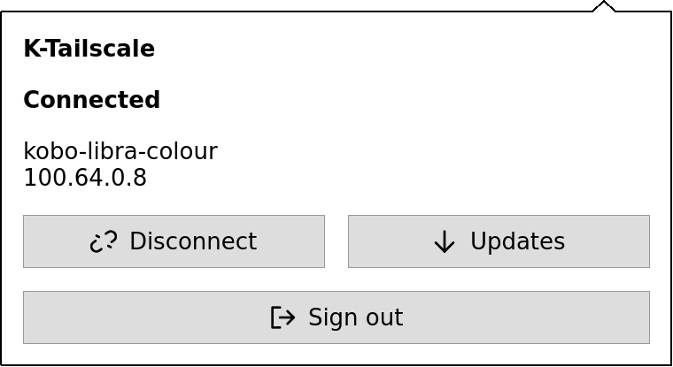
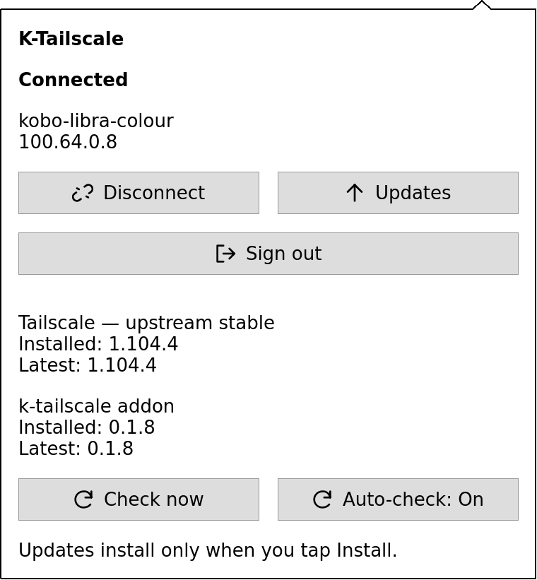

TAILSCALE, ON YOUR KOBO
Your library.
Wherever you read.
Bring your Kobo onto your tailnet. Connect to your library server and manage Tailscale from a native toolbar.
Kobo Clara HD · Firmware 4.38.23852
Tailscale, connection controls, and an upstream update checker. You choose when to install updates. Public binaries use books storage; verified copies run from RAM, with your identity kept on system storage. The Clara’s required TUN driver is included and loaded automatically.
Loading release information…
GET CONNECTED
Install on your Kobo
Keep the Kobo connected until the copy is verified.
- 1
Connect your Kobo
Plug it into your computer by USB, then tap Connect on its screen.
- 2
Select its drive
Choose KOBOeReader in the folder picker.
- 3
Copy the installer
We’ll check the download, copy it, then verify the file on your Kobo.
- 4
Eject, unplug, and sign in
Safely eject the Kobo from your computer and unplug it. Let it restart, open the nine-dot K-Tailscale icon beside Search, and tap Sign in. Scan the QR with your phone, or open the complete text link. Use Connect to resume an existing login.
Install by copying one file
Download the package below and copy it to your Kobo.
Download KoboRoot.tgzIf .kobo/KoboRoot.tgz already exists, finish that pending update before copying this file.
- Copy it into the hidden .kobo folder on the Kobo drive.
- Keep the filename KoboRoot.tgz and leave it packed.
- Safely eject and unplug. Let the Kobo restart.
- Open K-Tailscale from the nine-dot toolbar icon, tap Sign in, and scan its QR with your phone or open the complete text link. Use Connect to resume an existing login.
On a Mac, press ⌘ ⇧ . in Finder to show hidden folders.
Drive access stays in your browser. Your books and account details stay on the Kobo.
ON YOUR KOBO
A quick look at K-Tailscale
Connection controls and software updates, right from the Kobo toolbar. Native UI previews with example device details; select an image to see it at full size.



